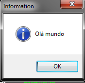
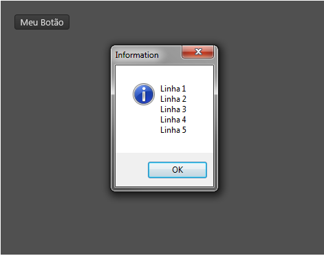

Tag script
Tag script
Esta tag especial serve para definir um bloco de códigos LUA (veja A linguagem de programação LUA) que será executado quando uma nova instância do Lua Form for criada.
Observações:
- O corpo da tag contém código de programação LUA
- Esta tag não cria nenhum controle.
- A ordem que a tag script foi definida no documento Lua Form importa! O código será executado logo após a criação da tag/controle que está acima, porém antes da criação da tag/controle que está abaixo. No momento exato em que o script é executado, a variável "sheet" conterá valor nil e será preenchido num momento posterior#8202;.
Importante: Não deixe de ler as Orientações ao usar código LUA em um Lua Form
Características
Propriedades e atributos
Esta tag não possui propriedades e atributos.
Exemplos
Exemplo 1 - Exibindo um "olá mundo" na hora da criação de uma instância do Lua Form
| \<?xml version="1.0" encoding="UTF-8"?> \<form name="frmFichaTeste"> \<script> showMessage("Olá mundo"); \</script> \</form> |
|---|
Ao criar a interface:

Exemplo 2 - Definindo funções para serem invocadas depois
| \<?xml version="1.0" encoding="UTF-8"?> \<form name="frmFichaTeste"> \<script> local function exibirMensagem() local msg = ""; for i = 1, 5, 1 do msg = msg .. "Linha " .. i .. "\n"; end; showMessage(msg); end; \</script> \<button text="Meu Botão" left="20" top="20" onClick="exibirMensagem();"/> \</form> |
|---|

Veja também:
Created with the Personal Edition of HelpNDoc: Effortlessly upgrade your WinHelp HLP help files to CHM with HelpNDoc